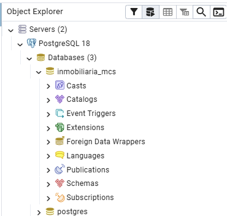
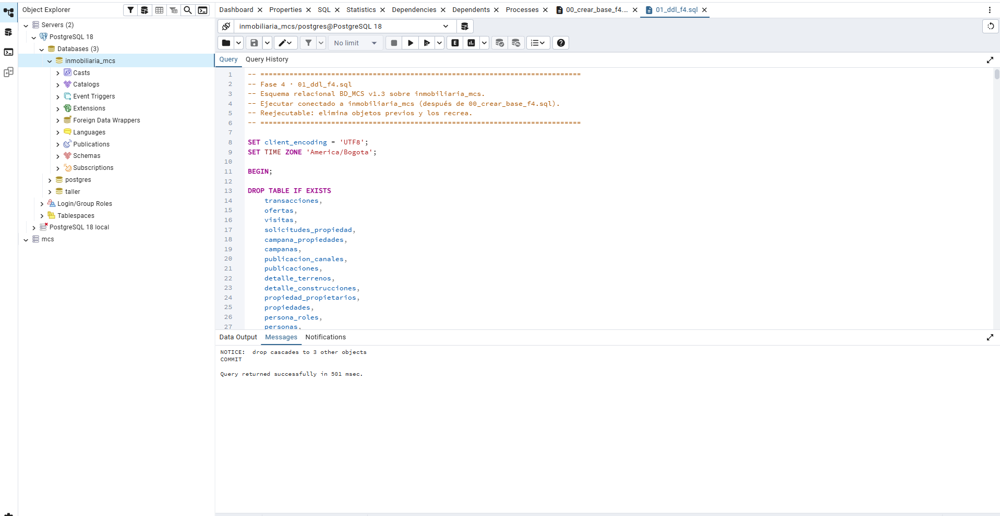
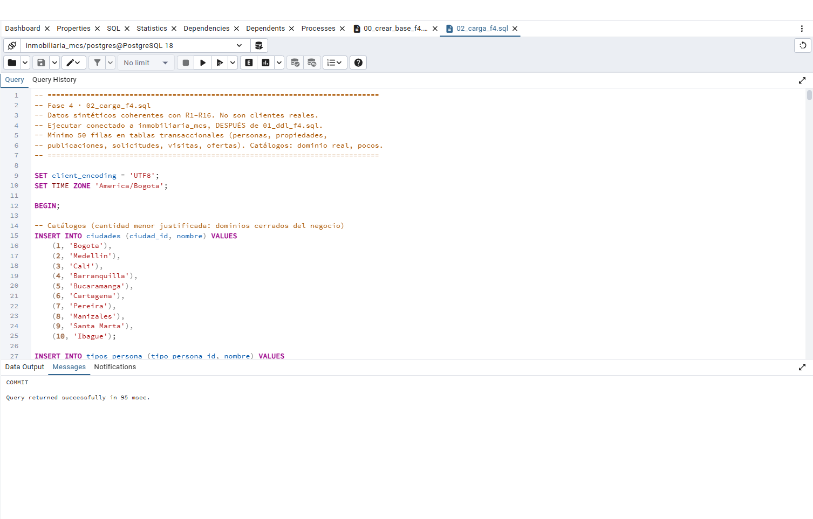
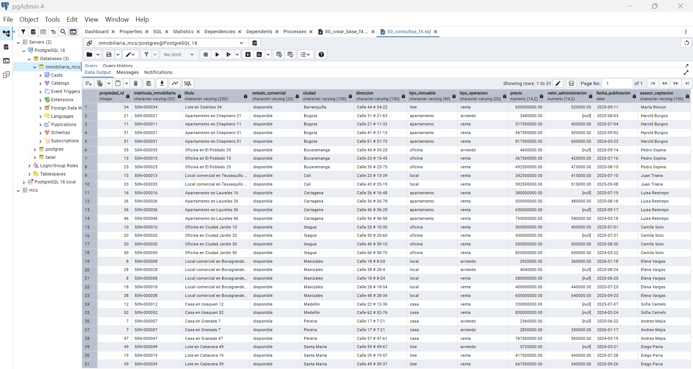
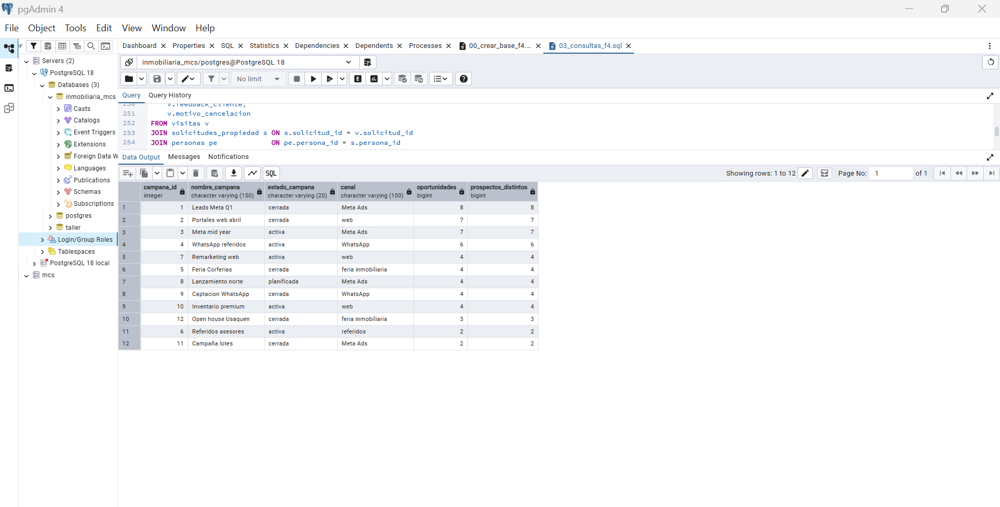
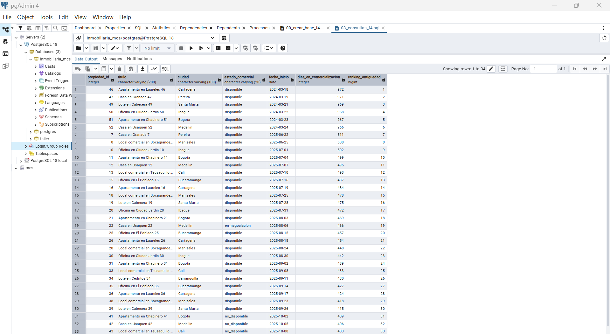
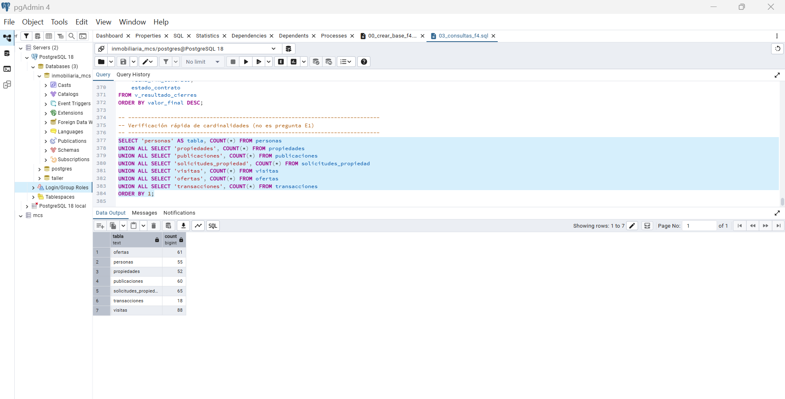
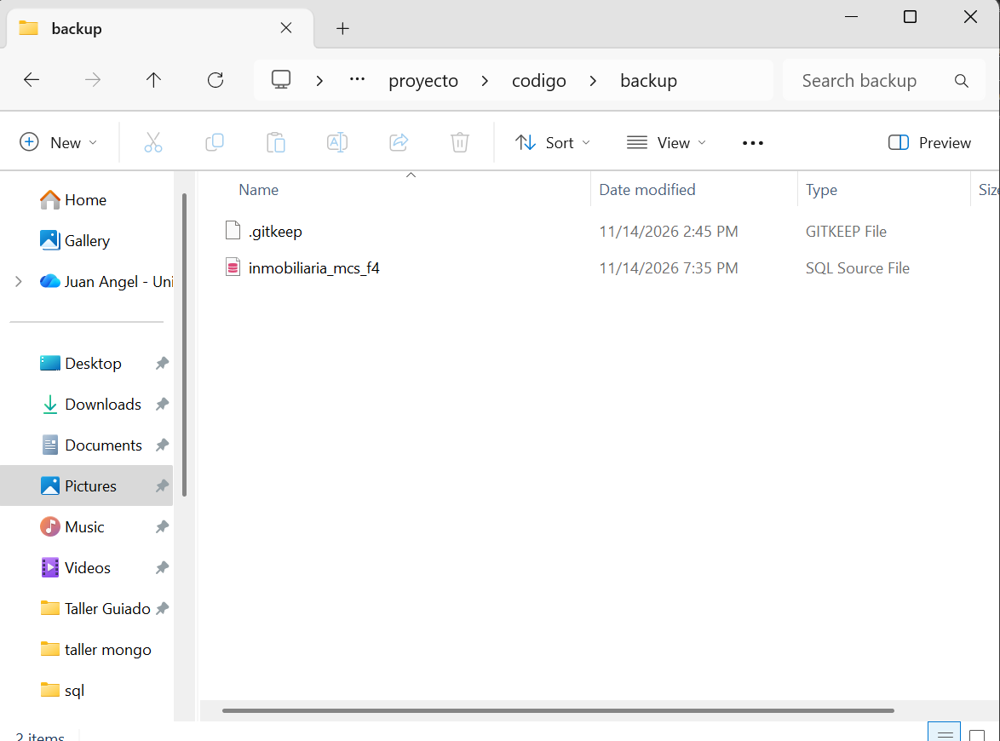

Implementación en PostgreSQL y consultas
Equipo: Harold Burgos, Sofía Camelo, Juan Triana Base: inmobiliaria_mcs Modelo: BD_MCS v1.3
Construimos la base en PostgreSQL 18 y la administramos con pgAdmin 4. Los scripts de esta carpeta se ejecutan en este orden: sql/00_crear_base_f4.sql sobre la base postgres (solo crea inmobiliaria_mcs); después, ya conectados a inmobiliaria_mcs, 01_ddl_f4.sql, 02_carga_f4.sql y 03_consultas_f4.sql.
El script de tablas define llaves, restricciones, la función registrar_cierre y los triggers de negocio. La carga usa datos de prueba. Los catálogos (ciudades, tipos, canales, roles) son cortos porque el dominio es cerrado. Las tablas del proceso superan las 50 filas: personas, propiedades, publicaciones, solicitudes, visitas y ofertas.



Cada pregunta y la consulta que la responde
| # | Pregunta | Dónde está | Cómo la resolvimos |
|---|---|---|---|
| 1 | Propiedades disponibles, precio, ubicación y estado | Vista v_inventario_disponible | Seis tablas unidas; solo la publicación vigente |
| 2 | Prospectos por propiedad | Segunda consulta | Solicitud, persona y propiedad (el interesado, no el dueño) |
| 3 | Propiedades con más oportunidades activas | Tercera consulta | Agrupación y HAVING de al menos dos |
| 4 | Estado de seguimiento de cada prospecto | Vista v_pipeline_activo | Estados abiertos del pipeline |
| 5 | Visitas de cada oportunidad | Quinta consulta | La visita apunta a la solicitud; la propiedad se obtiene por ahí |
| 6 | Campañas y canales con más prospectos | Sexta consulta | Agrupación por campaña y canal; las solicitudes sin campaña no entran |
| 7 | Prospectos, visitas y ofertas por inmueble | Séptima consulta | CTE metricas |
| 8 | Quiénes llegaron a negociación o cierre | Octava consulta | Subconsulta EXISTS |
| 9 | Más tiempo en comercialización sin cierre | Novena consulta | CTE y RANK() |
| 10 | Resultado económico de los cierres | Vista v_resultado_cierres | Comisión calculada, no digitada |
La última consulta del script solo cuenta filas. Sirve para comprobar la carga; no responde una pregunta del negocio.




Reglas que quedaron en la base
| Objeto | Regla | Qué hace |
|---|---|---|
registrar_cierre | R12 | Inserta el cierre en una llamada |
trg_validar_y_aplicar_transaccion | R12 y R11 | Rechaza el cierre si la oferta no está aceptada; marca la solicitud ganada y actualiza el estado del inmueble |
trg_solicitud_no_es_dueno | R2 y R6 | El dueño no puede ser el prospecto de la misma propiedad |
trg_solicitud_motivo_descarte | Pipeline | Si la solicitud se descarta, exige motivo |
trg_oferta_aceptada_en_negociacion | R11 | Al aceptar una oferta, la propiedad pasa de disponible a en negociación |
Triggers de actualizado_en | Auditoría | Actualizan la fecha de modificación |
Están definidos en 01_ddl_f4.sql. El script de consultas vuelve a crear la función de cierre y su trigger para dejar juntos los objetos de esta fase.
Respaldo
El respaldo de la base está en backup/inmobiliaria_mcs_f4.sql. Lo generamos desde pgAdmin (clic derecho sobre inmobiliaria_mcs, Backup, formato plano).
